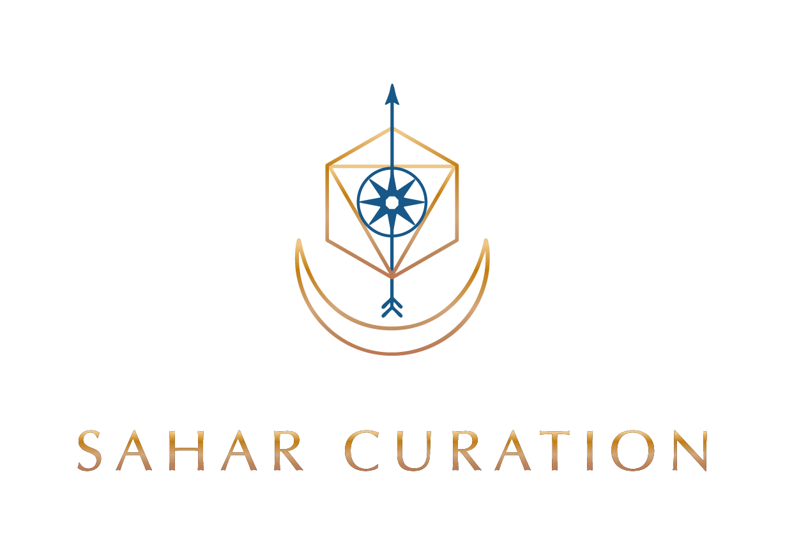
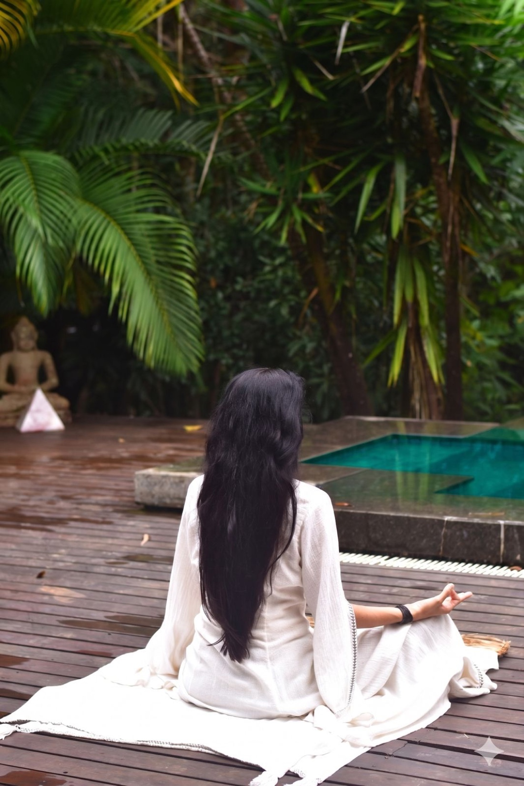

Sound Dome Temple
at Cidade Matarazzo
Since we first spoke of this project, I have been quietly weaving the web. Reaching out to the most knowledgeable beings in the realm of sound and meditation around São Paulo and beyond — gathering the connections, the elders, the artists, the soundscapes — so that this Sound Dome Temple can be received into the world with the full breath it deserves.
I see this space as one of service to humanity. A return to the body. To the present moment. To the here and now. A pause that the city of São Paulo, and the wider world, are crying out for — even if it doesn't yet know how to name what it longs for.
I am ready. I feel the call clearly. And I am writing to commit, with full presence, to be the keeper of this vision alongside you.
What I bring is the activation of sacred space. The curation of frequency. A practice of harmonization that I have cultivated as the path of my life — across continents, traditions, and rooms that needed to remember their stillness.
I bring the right people into the right rooms. I find them. I weave with them. I create the lineup of soundscapes, ceremonies, and contemplative encounters that will make this dome a destination — a living, breathing instrument.
And I bring the feminine touch — the eye for the textile, the crystal, the gong, the altar, the copal and sacred smudging. The details that turn a structure into a sanctuary.
Eight is the symbol of infinity. Doubled, it becomes the breath of abundance — a Sufi multiple of 110, the number of return. This is a figure I trust will bring prosperity to the giver and the receiver.
Within this monthly commitment, the project is held in its entirety — from creative direction and project management on site at Cidade Matarazzo, to the activation of altars and the harmonization of the space through ceremony, sound, copal and intention.
It includes the curation of musicians, healers and soundscapes — the lineup of artists who will inhabit the dome — and the careful selection of the crystals, gongs, textiles and interior elements that bring the space alive. Every object placed in the right alignment will enhance the frequency of this sacred space.
Three months of presence on the ground. Three months of continuous activation — every day a new note, a new ceremony, a new offering — so that by the time the dome opens to the public, it is already pulsing.
I am available to begin this October, November, December, or in the months that follow — whenever the dome is ready to receive activation. From the moment the seed is planted, I commit to holding this project in my prayers, my planning, and my time. I am yours from that moment forward.
